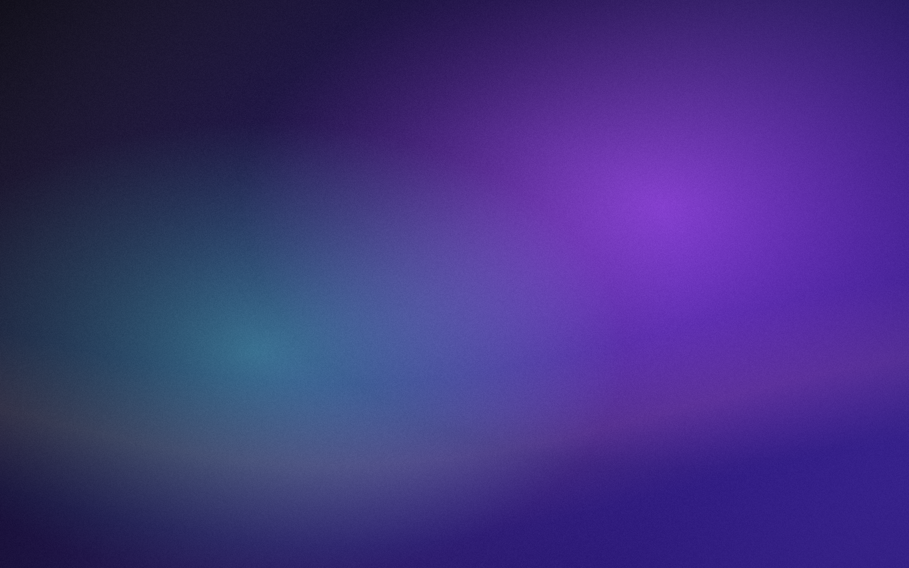
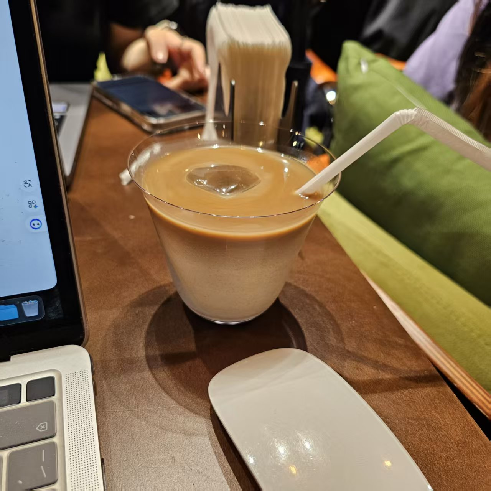
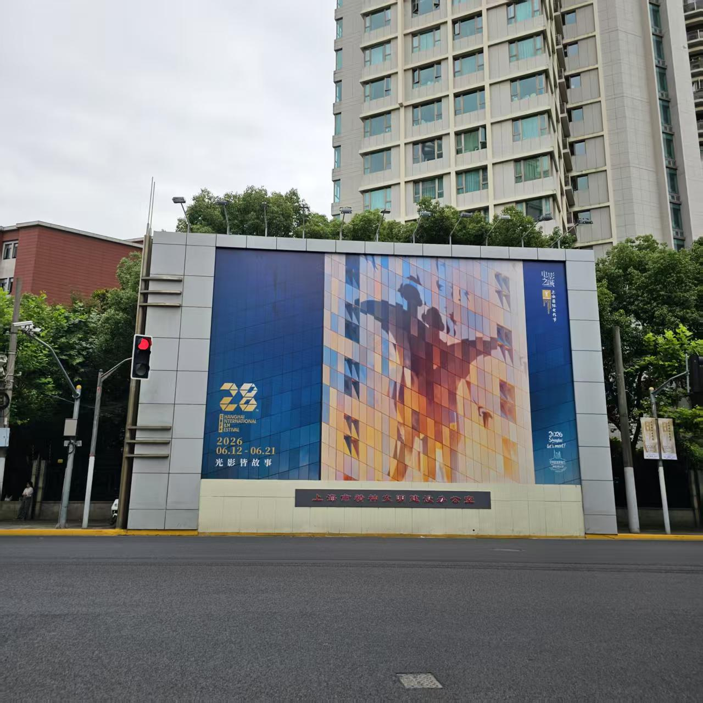
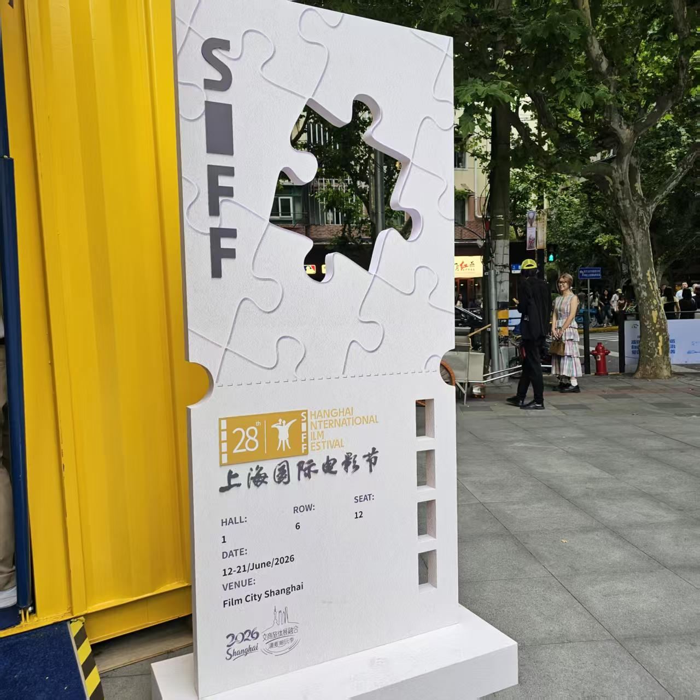
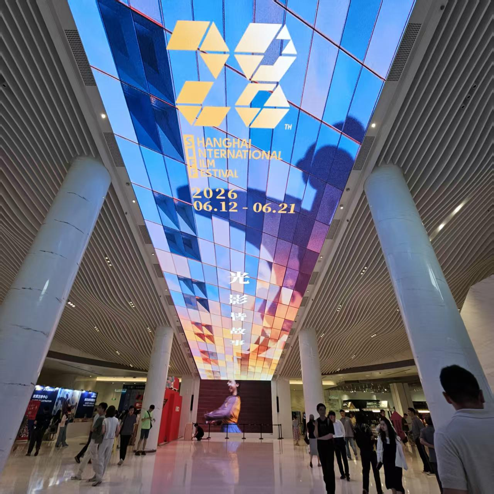

清晰表达
擅长把需求、思路和成果拆解成容易理解的结构，让沟通更高效。

Rose Nebula · NGC 2237
像玫瑰星云里的电离氢气一样，在暗处发光——把模糊的想法凝成清晰、可感知的形态。
擅长把需求、思路和成果拆解成容易理解的结构，让沟通更高效。
偏好克制但有辨识度的视觉风格，关注排版、节奏和细节一致性。
从真实反馈里优化作品，让页面、内容和体验逐步接近目标。
Canvas Effects
Cosmos
移动鼠标改变引力中心，点击释放脉冲波。
每一颗粒子都在螺旋臂上漂移，像遥远星系里的尘埃。
Today / 2026.06.13
从一杯咖啡和电脑开始，到上海国际电影节的城市现场，把今天收进一组紫色记忆里。

用一杯冰咖啡给今天开机，电脑、鼠标和桌面细节组成了安静的工作起点。

城市街口出现第 28 届上海国际电影节的视觉，像是今天行程的第一个提示。

白色拼图片和黄色集装箱让现场很有记忆点，像一张可以走进去的电影票。

场馆天幕把蓝色、金色和人群投影铺开，今天从代码和咖啡走向了电影与光。
Focus · SYS/VECTOR
在数据星图里标记坐标，每一项能力都是一颗可被点亮的导航星。
Selected Work
Contact
如果你也在做网页、内容或产品方向的事，欢迎写信聊聊想法与合作可能。